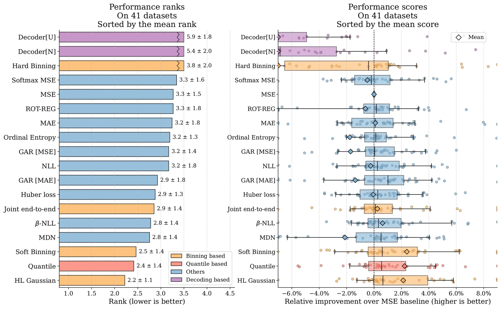
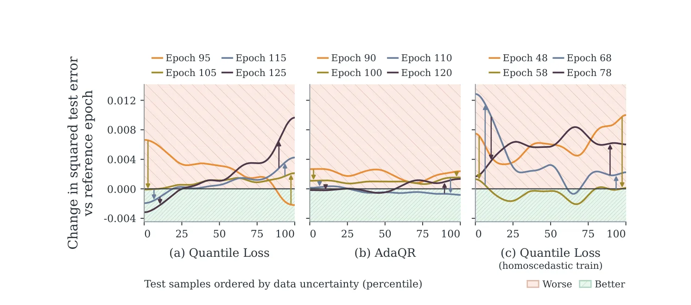
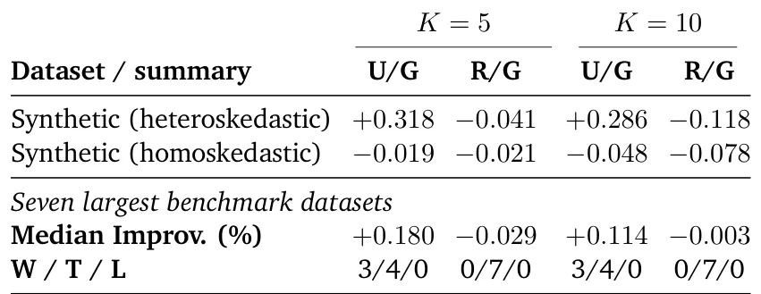
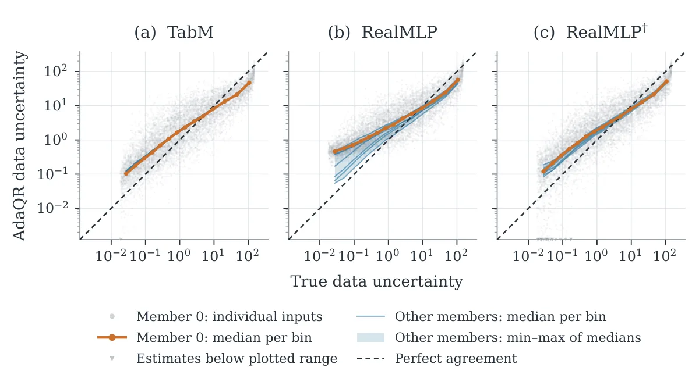

O paradoxo da regressão tabular profunda
A adoção de redes neurais profundas para dados tabulares cresceu significativamente nos últimos anos. No entanto, quando se trata de tarefas de regressão, a escolha da função de objetivo (loss function) permanece uma liberdade pouco estudada. A prática comum ainda recai sobre o Mean Squared Error (MSE), a perda do erro quadrático médio, simplesmente porque é o padrão. Mas será que ele é o melhor para dados tabulares complexos?
Estudos anteriores sugerem alternativas ao MSE, mas esses trabalhos frequentemente usam diferentes datasets, arquiteturas de rede (backbones) e protocolos de avaliação. Essa falta de padronização torna impossível comparar os benefícios práticos das novas abordagens. Os autores deste paper, da Yandex Research, BRAInLab e HSE University, decidem preencher essa lacuna com uma reavaliação sistemática.
O trabalho não se limita a testar uma ou duas funções de perda. Eles benchmarkam 18 objetivos de regressão diferentes em 41 datasets tabulares estabelecidos. O foco é em redes neurais convencionais (MLPs e backbones avançados), excluindo modelos como PFNs pré-treinados para manter o escopo controlado. O objetivo é claro: descobrir o que realmente funciona na prática, com tuning extensivo de hiperparâmetros.

MSE vs. Alternativas: Quem vence?
Os resultados iniciais revelam uma verdade desconfortável para quem busca a próxima grande inovação em funções de perda: a maioria das alternativas propostas não melhora consistentemente sobre uma versão cuidadosamente ajustada do MSE. Em muitos casos, a complexidade extra das novas funções de perda traz pouco ou nenhum benefício prático.
Dois tipos de abordagem se destacam. Primeiro, objetivos baseados em binning suavizado por Gaussianas, que tratam o alvo como uma distribuição sobre bins discretos. Segundo, a perda quantil (quantile loss), que prevê quantiles condicionais da distribuição do alvo. Entre esses dois, a perda quantil é a que oferece ganhos mais consistentes, especialmente quando testada em diferentes backbones de redes neurais.
Isso complementa evidências da literatura de modelos como PFNs, onde o TabICLv2 já adotava a perda quantil com sucesso. Nosso estudo confirma que, para modelos tabulares convencionais, a perda quantil é um ponto de partida superior ao MSE, desde que o tuning seja adequado. Mas, mesmo com essa melhoria, um problema fundamental permanece oculto no processo de treinamento.
O problema invisível: Early Stopping Global
O treinamento de redes neurais geralmente termina quando o erro de validação para de melhorar, um técnica chamada 'early stopping'. O problema é que, na prática, usamos um único checkpoint global para todo o modelo. Assumimos que o modelo está 'pronto' para todos os tipos de entrada ao mesmo tempo.
Os autores identificam que essa suposição é falsa para dados tabulares com heterocedasticidade — ou seja, quando o nível de ruído (incerteza) nos dados de destino varia dependendo da entrada. Regiões do espaço de dados com baixo ruído podem atingir seu melhor desempenho preditivo em uma época de treinamento (epoch), enquanto regiões com alto ruído precisam de mais tempo para convergir, ou vice-versa.
Isso cria um conflito. Ao parar o treinamento em um único ponto global, você está forçando um compromisso. Ou você para cedo demais para as regiões ruidosas (subtreinamento), ou tarde demais para as regiões limpas (sobreajuste). Esse fenômeno é comum em dados tabulares reais, onde a qualidade da informação não é uniforme.

Evidências empíricas do conflito
Para provar isso, os autores realizaram experimentos sintéticos controlados. Eles criaram dados com níveis de ruído heterogêneos e treinaram modelos usando perda quantil. Os resultados mostraram claramente que a curva de erro de validação para subgrupos de dados com diferentes níveis de ruído atingia seu mínimo em épocas distintas.
Em seguida, eles testaram isso em datasets reais. A estratégia de selecionar checkpoints separados para coortes definidas pela incerteza estimada (usando métodos como Uncertainty-Guided selection) resultou em uma redução significativa do erro médio de teste (RMSE) comparado à seleção global. Isso confirma que o 'early stopping' global é, de fato, um gargalo que limita o potencial de objetivos mais sofisticados como a perda quantil.
A tabela de resultados mostra que, ao dividir os dados e escolher o melhor checkpoint para cada grupo de incerteza, a performance melhora consistentemente. Isso não é apenas uma melhoria marginal; é uma falha estrutural no pipeline padrão de treinamento de regressão profunda.

AdaQR: Uma solução via suavização adaptativa
Se o problema é o conflito de épocas, a solução direta seria um 'early stopping' por região. Mas isso é complexo de implementar e manter. Os autores propõem uma alternativa via aprendizado: a Adaptive Quantile Regression (AdaQR). A ideia não é mudar quando parar, mas mudar como o modelo aprende em regiões ruidosas.
O AdaQR introduz uma suavização dependente da entrada (input-dependent smoothing) diretamente na função de perda quantil. Em regiões onde o modelo estima alta incerteza, a suavização reduz a sensibilidade das atualizações de gradiente a realizações individuais de rótulos ruidosos. Isso efetivamente atrasa o sobreajuste nessas regiões difíceis.
Simultaneamente, em regiões de baixa incerteza, a suavização é menor, permitindo que o modelo continue aprendendo padrões finos sem ser impedido. O resultado é um alinhamento temporal: o modelo é forçado a aprender as regiões ruidosas e limpas em um ritmo mais compatível, mitigando a necessidade de checkpoints separados.

Validação e Limitações
Os autores validam o AdaQR em vários backbones. Os resultados mostram melhorias sobre a perda quantil padrão em configurações específicas, confirmando que a suavização adaptativa ajuda a resolver o conflito de stopping. Além disso, o modelo demonstra capacidade de estimar a incerteza dos dados com precisão, conforme mostrado nos gráficos de correlação entre incerteza estimada e real.
No entanto, é crucial notar as limitações. O benefício do AdaQR não é universal; ele varia entre backbones e datasets. Em alguns casos, a melhoria é pequena ou inexistente. Isso sugere que a eficácia da suavização adaptativa depende da arquitetura da rede e da natureza específica da heterocedasticidade nos dados.
O paper não afirma que o AdaQR é a solução final. Ele é apresentado como uma 'remedy' (remédio) potencial para o problema do mismatch de stopping. Os autores enfatizam que o progresso na regressão tabular requer atenção não apenas à função de perda, mas ao tempo de aprendizado de diferentes partes dos dados.
Conclusão: Além da Função de Perda
Este paper oferece uma imagem empírica moderna dos objetivos de regressão para deep learning tabular. A mensagem principal é dupla: primeiro, a perda quantil é superior ao MSE para a maioria dos casos; segundo, mesmo com a melhor função de perda, o pipeline de treinamento padrão (especialmente o early stopping global) é um gargalo significativo.
Os autores concluem que avanços futuros devem considerar como diferentes partes dos dados são aprendidas ao longo do tempo. Ignorar a heterogeneidade do ruído é ignorar uma propriedade fundamental dos dados reais. O código para reproduzir os experimentos está disponível, convidando a comunidade a testar essas ideias em seus próprios domínios.
Para desenvolvedores e cientistas de dados, a lição prática é: não assuma que o MSE é suficiente, mas também não confie cegamente em um único checkpoint de validação. Considere a incerteza dos seus dados e avalie se o modelo está convergindo uniformemente em todas as suas regiões de interesse.
O que fica
- A perda Mean Squared Error (MSE) é difícil de superar consistentemente, mas a perda quantil oferece ganhos robustos em múltiplos backbones.
- Regiões dos dados com níveis diferentes de ruído atingem o pico de performance em épocas de treinamento distintas.
- Um único checkpoint de 'early stopping' global impõe um compromisso subótimo entre regiões de alta e baixa incerteza.
- A proposta AdaQR introduz suavização dependente da entrada para alinhar o aprendizado, melhorando a estimativa de incerteza.
Paper original: Revisiting Tabular Deep Regression: Objectives and the Limits of Global Early Stopping
Comentários
Nenhum comentário ainda. Seja o primeiro.